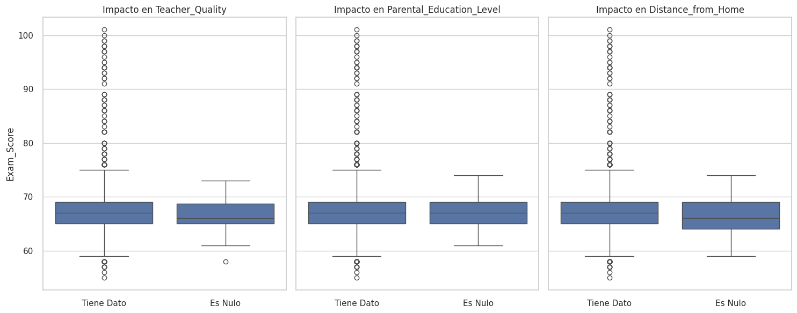
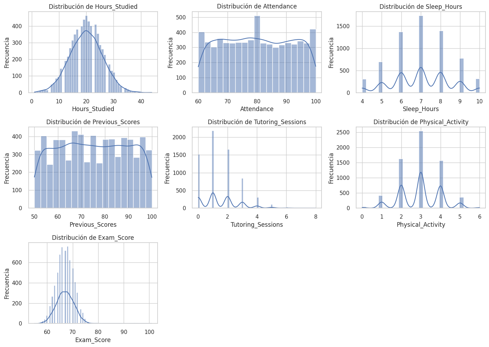
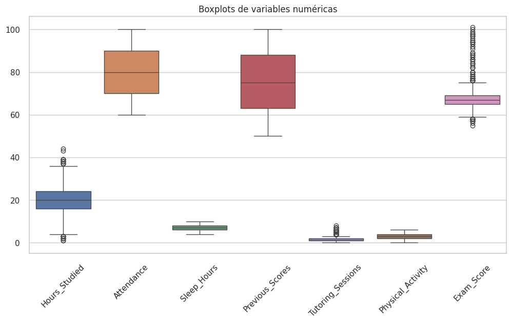
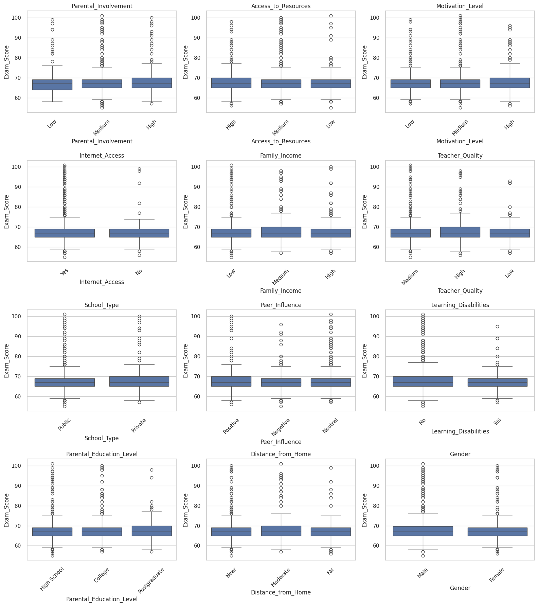
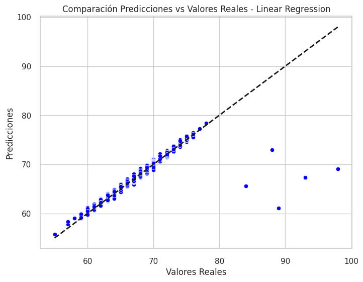
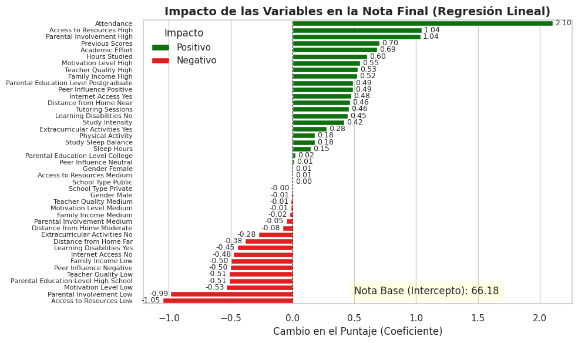
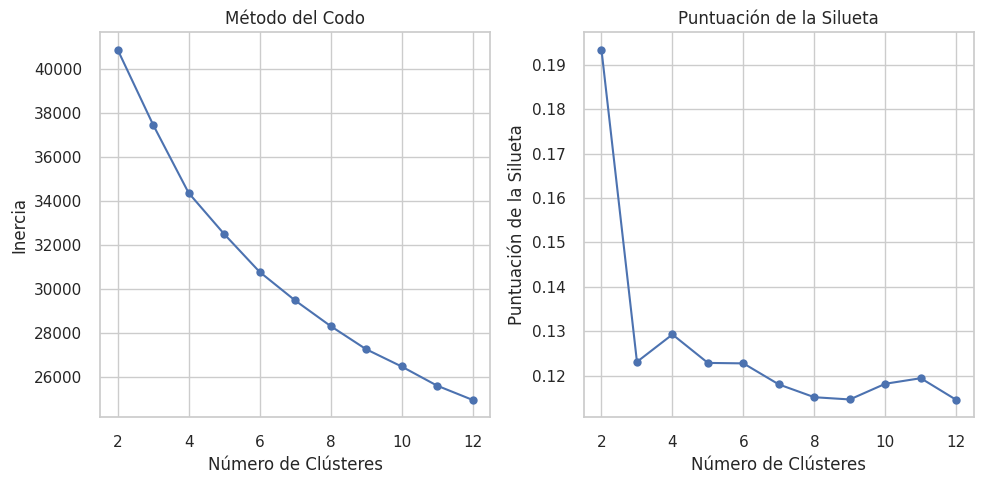
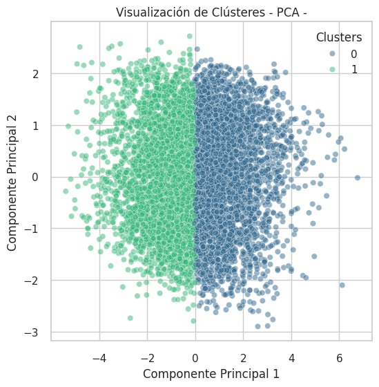
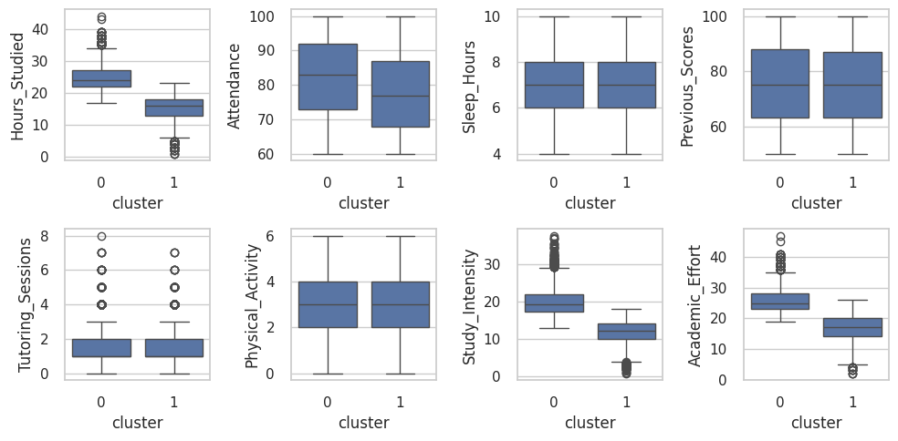
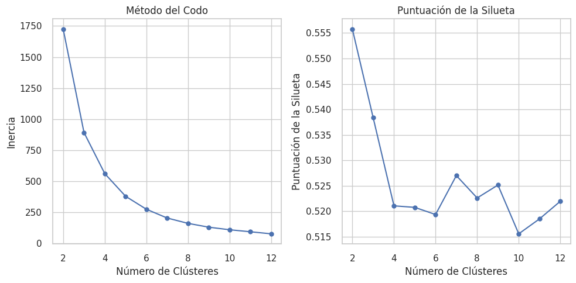

Pontificia Universidad Católica de Chile Magister en Ciencia de Datos
Alumnos: Miguel Rojas Cárdenas, Deyanira Laguna Díaz, Jhonnatan Torres Suárez y Esteban Neira Fonseca
Student Performance Factors
Para el desarrollo de este trabajo se utilizó la base de datos “Student Performance Factors”, disponible públicamente en la plataforma Kaggle. Este conjunto de datos recopila información a nivel individual de estudiantes, integrando variables académicas, familiares, socioeconómicas y conductuales, con el objetivo de analizar los factores asociados al desempeño académico medido a través del puntaje obtenido en evaluaciones finales.
El dataset incluye variables relacionadas con hábitos de estudio, asistencia, acceso a recursos educativos, nivel de motivación, características del entorno familiar, tipo de institución educativa y otros determinantes relevantes del rendimiento escolar. Esta diversidad de variables permite abordar el desempeño académico desde una perspectiva multivariada, reconociendo que los resultados educativos no dependen únicamente de factores individuales, sino también de condiciones estructurales y contextuales.
Desde un enfoque aplicado, este conjunto de datos resulta particularmente relevante para estudios en el ámbito educativo, ya que facilita la identificación de patrones asociados al rendimiento académico y la segmentación de estudiantes según perfiles de desempeño. En contextos de políticas educativas y programas de apoyo escolar, este tipo de análisis es fundamental para orientar intervenciones focalizadas, optimizar la asignación de recursos y fortalecer estrategias de mejora del aprendizaje.
1 - Introducción
El presente proyecto tiene como objetivo analizar y modelar el desempeño académico de los estudiantes a partir de un conjunto amplio de factores individuales, familiares y escolares. Para ello, se emplean técnicas de aprendizaje supervisado con el fin de predecir el puntaje obtenido en evaluaciones académicas, así como técnicas de aprendizaje no supervisado orientadas a la identificación de patrones latentes y a la segmentación de estudiantes según perfiles de desempeño similares.
Los resultados obtenidos buscan aportar evidencia empírica que pueda ser útil en la toma de decisiones educativas, el diseño de estrategias de apoyo académico y la formulación de políticas orientadas a mejorar los resultados de aprendizaje.
2 - Configuración inicial
2.1 Carga de librerías
Code
# 1 - Manipulación de datos y visualizaciónimport pandas as pdimport numpy as npimport matplotlib.pyplot as pltimport seaborn as sns# 2 - Preprocesamiento y selección de modelosfrom sklearn.model_selection import train_test_splitfrom sklearn.model_selection import cross_validatefrom sklearn.impute import SimpleImputerfrom sklearn.preprocessing import OneHotEncoder, StandardScalerfrom sklearn.compose import ColumnTransformerfrom sklearn.pipeline import Pipeline# 3 - Modelos de Regresiónfrom sklearn.linear_model import LinearRegressionfrom sklearn.ensemble import RandomForestRegressorfrom sklearn.ensemble import GradientBoostingRegressorfrom sklearn.svm import SVRfrom sklearn.neighbors import KNeighborsRegressor# 4. Métricas de evaluaciónfrom sklearn.metrics import mean_absolute_error, mean_squared_error, r2_score# 5 - Aprendizaje No Supervisado (Clustering y Reducción de Dimensionalidad)from sklearn.cluster import KMeansfrom sklearn.decomposition import PCAfrom sklearn.manifold import TSNEfrom sklearn.metrics import silhouette_scorefrom yellowbrick.cluster import SilhouetteVisualizer
Gender: Género del estudiante:
- Male: Masculino.
- Female: Femenino.
Hours_Studied: Número promedio de horas de estudio por semana.
Attendance: Porcentaje de asistencia del estudiante a clases durante el período académico.
Parental_Involvement: Nivel de involucramiento de los padres en el proceso educativo del estudiante:
- Low: Bajo.
- Medium: Medio.
- High: Alto.
Access_to_Resources: Disponibilidad de recursos educativos para el estudiante (libros, materiales, tecnología):
- Low: Bajo.
- Medium: Medio.
- High: Alto.
Extracurricular_Activities: Participación del estudiante en actividades extracurriculares:
- Yes: Participa en actividades extracurriculares.
- No: No participa en actividades extracurriculares.
Sleep_Hours: Número promedio de horas de sueño del estudiante por noche.
Previous_Scores: Puntaje académico obtenido por el estudiante en evaluaciones previas.
Motivation_Level: Nivel de motivación del estudiante:
- Low: Bajo.
- Medium: Medio.
- High: Alto.
Internet_Access: Disponibilidad de acceso a internet del estudiante:
- Yes: Tiene acceso a internet.
- No: No tiene acceso a internet.
Tutoring_Sessions: Número de sesiones de tutoría académica recibidas por mes.
Family_Income: Nivel de ingreso familiar del estudiante:
- Low: Bajo.
- Medium: Medio.
- High: Alto.
School_Type: Tipo de institución educativa a la que asiste el estudiante:
- Public: Institución pública.
- Private: Institución privada.
Peer_Influence: Influencia del grupo de pares en el desempeño académico del estudiante:
- Positive: Influencia positiva.
- Neutral: Influencia neutral.
- Negative: Influencia negativa.
Physical_Activity: Número promedio de horas dedicadas a actividad física por semana.
Learning_Disabilities: Presencia de dificultades de aprendizaje:
- Yes: Presenta dificultades de aprendizaje.
- No: No presenta dificultades de aprendizaje.
Parental_Education_Level: Nivel educativo más alto alcanzado por los padres o tutores del estudiante:
- High School: Educación secundaria.
- College: Educación universitaria.
- Postgraduate: Educación de posgrado.
Distance_from_Home: Distancia aproximada entre el hogar del estudiante y la institución educativa:
- Near: Cercana.
- Moderate: Moderada.
- Far: Lejana.
Exam_Score: Puntaje final obtenido por el estudiante. Esta variable se considera la variable respuesta (Y) en los modelos de aprendizaje supervisado
En esta sección identificamos la cantidad de datos faltantes y verificamos si existen registros duplicados que puedan sesgar el análisis.
Code
null_counts = df.isnull().sum()print("Conteo de valores nulos por columna:\n")print(null_counts[null_counts >0])print("\nNúmero de filas duplicadas:", df.duplicated().sum())
Conteo de valores nulos por columna:
Teacher_Quality 78
Parental_Education_Level 90
Distance_from_Home 67
dtype: int64
Número de filas duplicadas: 0
3.4.2 Diagnóstico de nulos
Analizamos visualmente si la ausencia de datos en las variables categóricas tiene relación con la variable objetivo (Exam_Score).
Code
# columnas con nulos para analizarnan_cols = [col for col in df.columns if df[col].isna().any()]# dataframe temporaldf_nan = df[nan_cols].copy()df_nan['Exam_Score'] = df['Exam_Score']# Configuración de gráficosnum_plots =len(nan_cols)fig, axes = plt.subplots(1, num_plots, figsize=(5* num_plots, 6), sharey=True)if num_plots ==1: axes = [axes]for i, col inenumerate(nan_cols): df_nan['Status'] = df_nan[col].isna().map({True: 'Es Nulo', False: 'Tiene Dato'}) sns.boxplot(x="Status", y='Exam_Score', data=df_nan, ax=axes[i]) axes[i].set_title(f'Impacto en {col}') axes[i].set_xlabel('')if i >0: axes[i].set_ylabel('')plt.tight_layout()plt.show()

3.4.3 Tratamiento de valores faltantes (Imputación)
Análisis: A partir del proceso de verificación y del análisis de valores únicos, confirmamos que las variables Teacher_Quality, Parental_Education_Level y Distance_from_Home presentan valores faltantes reales (NaN).
Dado que el porcentaje de faltantes es bajo (< 2%) y que la distribución del Exam_Score es similar entre datos nulos y completos (ver gráficos anteriores), concluimos que la ausencia de datos no está correlacionada fuertemente con la variable dependiente.
Acción: Procedemos a crear un dataset limpio (df_clean) e imputar estos valores usando la moda (valor más frecuente) para no perder registros.
Code
# 1. Crear copia independiente para limpiezadf_clean = df.copy()# 2. Revisión rápida de valores únicos antes de imputarprint("Valores únicos antes de limpieza:")cols_to_fix = ['Teacher_Quality', 'Parental_Education_Level', 'Distance_from_Home']for col in cols_to_fix:if col in df.columns:print(f" - {col}: {df[col].unique()}")# 3. Imputación por Modaprint("\n--- Aplicando Imputación por Moda ---")for col in cols_to_fix:if col in df_clean.columns: moda = df_clean[col].mode()[0] df_clean[col] = df_clean[col].fillna(moda)print(f" > Nulos en '{col}' rellenados con: {moda}")# Verificación finalprint(f"\nNulos restantes en df_clean: {df_clean.isnull().sum().sum()}")
Valores únicos antes de limpieza:
- Teacher_Quality: ['Medium' 'High' 'Low' nan]
- Parental_Education_Level: ['High School' 'College' 'Postgraduate' nan]
- Distance_from_Home: ['Near' 'Moderate' 'Far' nan]
--- Aplicando Imputación por Moda ---
> Nulos en 'Teacher_Quality' rellenados con: Medium
> Nulos en 'Parental_Education_Level' rellenados con: High School
> Nulos en 'Distance_from_Home' rellenados con: Near
Nulos restantes en df_clean: 0
3.4.4 Eliminación de inconsistencias
El caso de Exam_Score > 100: Revisamos las estadísticas descriptivas para detectar valores fuera de rango. En particular, analizamos la variable objetivo.
Code
# Revisión estadística de variables numéricas clavenumeric_cols_check = ['Hours_Studied', 'Attendance', 'Sleep_Hours', 'Previous_Scores', 'Exam_Score']display(df_clean[numeric_cols_check].describe())# Detección específica de error en Exam_Scoreoutliers = df_clean[df_clean['Exam_Score'] >100]print(f"\nCantidad de registros con Exam_Score > 100: {len(outliers)}")
Hours_Studied
Attendance
Sleep_Hours
Previous_Scores
Exam_Score
count
6607.000000
6607.000000
6607.00000
6607.000000
6607.000000
mean
19.975329
79.977448
7.02906
75.070531
67.235659
std
5.990594
11.547475
1.46812
14.399784
3.890456
min
1.000000
60.000000
4.00000
50.000000
55.000000
25%
16.000000
70.000000
6.00000
63.000000
65.000000
50%
20.000000
80.000000
7.00000
75.000000
67.000000
75%
24.000000
90.000000
8.00000
88.000000
69.000000
max
44.000000
100.000000
10.00000
100.000000
101.000000
Cantidad de registros con Exam_Score > 100: 1
Decisión: Se observa un valor máximo de 101 en Exam_Score, lo cual supera el límite teórico de la escala (0-100). Aunque es un caso aislado, decidimos eliminarlo para garantizar la integridad del dataset antes del modelado.
Code
# === Crear un dataset limpio (copia independiente) del original df ===df_clean = df.copy()# === Eliminar filas con Exam_Score fuera del rango teórico (0–100) ===df_clean = df_clean[df_clean["Exam_Score"].between(0, 100)].copy()# === Reset index para mantener consistencia ===df_clean.reset_index(drop=True, inplace=True)
4 - Análisis Exploratorio de Datos
En esta etapa analizamos la estructura, calidad y patrones de los datos sin modificarlos. El objetivo es detectar anomalías (outliers), comprender la distribución de las variables y diagnosticar el impacto de los valores nulos.
4.1 Análisis Univariado (Histogramas y Boxplots)
Code
# Columnas numéricas para el análisisnumeric_cols = df.select_dtypes(include=['int64', 'float64']).columns.tolist()# 1. HISTOGRAMASplt.figure(figsize=(14, 10))for i, col inenumerate(numeric_cols, 1): plt.subplot(3, 3, i) sns.histplot(df[col], kde=True) plt.title(f'Distribución de {col}') plt.xlabel(col) plt.ylabel('Frecuencia')plt.tight_layout()plt.show()

Code
# 2. BOXPLOTSplt.figure(figsize=(12, 6))sns.boxplot(data=df[numeric_cols])plt.xticks(rotation=45)plt.title("Boxplots de variables numéricas")plt.show()

Histogramas: Estos gráficos muestran la distribución de las variables numéricas del dataset, destacando lo siguiente: * La mayoría presenta distribuciones coherentes con el contexto educativo. * Variables como Hours_Studied y Exam_Score exhiben distribuciones aproximadamente normales, mientras que Sleep_Hours, Tutoring_Sessions y Physical_Activity presentan distribuciones discretas y multimodales, reflejando patrones de comportamiento habituales entre los estudiantes. * Attendance y Previous_Scores muestran distribuciones relativamente uniformes. La primera muestra una distribución entre 60% y 100%; mientras que la segunda entre 50% y 100%.
Boxplots: El análisis mediante boxplots confirma que las variables numéricas presentan rangos y dispersiones coherentes con el contexto educativo. Si bien se observan valores atípicos en variables como Hours_Studied, Exam_Score y Tutoring_Sessions, estos corresponden a comportamientos plausibles y no evidencian errores de medición (salvo el caso puntual >100 detectado previamente), por lo que se mantienen para el análisis posterior.
Análisis del IQR: La detección de valores atípicos mediante el método del rango intercuartílico (IQR) permitió identificar observaciones extremas en algunas variables numéricas. No obstante, se observa que en variables como Hours_Studied, Exam_Score y Tutoring_Sessions el método tiende a sobredetectar outliers debido a la asimetría y naturaleza discreta de los datos.
En resumen, los valores extremos detectados no serán eliminados, dado que corresponden a comportamientos plausibles dentro del contexto educativo y no evidencian errores de medición. Estos valores aportan información relevante sobre la heterogeneidad de los estudiantes y se consideran apropiados para el análisis y el modelado posterior.
4.3 Análisis Bivariado (Correlaciones)
Code
# 1 Boxplots: Categóricas vs Exam_Scorecategorical_cols = ['Parental_Involvement', 'Access_to_Resources', 'Motivation_Level', 'Internet_Access', 'Family_Income','Teacher_Quality', 'School_Type', 'Peer_Influence', 'Learning_Disabilities', 'Parental_Education_Level', 'Distance_from_Home','Gender']plt.figure(figsize=(16, 18))for i, col inenumerate(categorical_cols, 1): plt.subplot(4, 3, i) sns.boxplot(x=df_clean[col], y=df['Exam_Score']) plt.xticks(rotation=45) plt.title(col)plt.tight_layout()plt.show()

Análisis de los diagramas de caja: El análisis bivariado entre las variables categóricas y el puntaje de examen (Exam_Score) revela patrones consistentes y coherentes con el contexto educativo. Se observan gradientes claros en las medianas del desempeño académico asociados a factores estructurales y psicosociales, particularmente en Parental_Involvement, Motivation_Level y Parental_Education_Level, donde niveles más altos se relacionan sistemáticamente con mayores puntajes. En el caso de Access_to_Resources, se aprecia una asociación positiva moderada, con mayores puntajes en estudiantes con mayor acceso, aunque con solapamiento considerable entre categorías.
Code
# 2 Matriz de correlación para variables numéricasplt.figure(figsize=(10, 8))corr = df[numeric_cols].corr()sns.heatmap(corr, annot=True, cmap='coolwarm', fmt=".2f")plt.title("Matriz de correlación (variables numéricas)")plt.show()print("\n"+"-"*60+" 💻 "+"-"*60+"\n")
Matriz de correlación: El análisis de correlación entre las variables numéricas y el puntaje de examen (Exam_Score) muestra asociaciones positivas moderadas con Attendance y Hours_Studied, mientras que el resto de las variables presenta relaciones lineales débiles o nulas.
5 - Feature engineering
En esta etapa, creamos nuevas variables a partir de las existentes para capturar interacciones y patrones más complejos que ayuden a los modelos a predecir mejor.
Code
# Crear una copia explícita para feature engineeringdf_fe = df_clean.copy()# === Intensidad de estudio ===# Combina horas de estudio con regularidad (asistencia)df_fe["Study_Intensity"] = df_fe["Hours_Studied"] * (df_fe["Attendance"] /100)# === Esfuerzo académico total (en horas) ===df_fe["Academic_Effort"] = df_fe["Hours_Studied"] + df_fe["Tutoring_Sessions"]# === Relación estudio–sueño ===df_fe["Study_Sleep_Balance"] = (df_fe["Hours_Studied"] - (df_fe["Sleep_Hours"] *7)) # multiplicar por 7 para dejar la misma escala semanal# Verificación rápida de nuevas variablesdf_fe[["Study_Intensity", "Academic_Effort", "Study_Sleep_Balance"]].describe()
Study_Intensity
Academic_Effort
Study_Sleep_Balance
count
6606.000000
6606.000000
6606.000000
mean
15.967318
21.467454
-29.230245
std
5.339210
6.097523
11.838062
min
0.690000
2.000000
-67.000000
25%
12.240000
17.000000
-37.000000
50%
15.750000
21.000000
-29.000000
75%
19.400000
26.000000
-21.000000
max
37.830000
47.000000
10.000000
Feature engineering: El feature engineering se realizó sobre una copia del dataset limpio (obtenido luego de eliminar el valor erróneo superior a 100 de la variable Exam_Score), asegurando que las transformaciones sean transparentes y reproducibles. Las variables creadas fueron las siguientes:
Study_Intensity: Combina las horas de estudio con la regularidad de asistencia, ponderando el esfuerzo académico efectivo. Esta variable busca reflejar no solo la cantidad de estudio, sino también su consistencia en el tiempo.
Academic_Effort: Representa el esfuerzo académico total del estudiante, integrando horas de estudio autónomo y sesiones de tutoría. Este indicador es un proxy de la carga global de dedicación académica
Study_Sleep_Ratio: representa el balance semanal entre el esfuerzo académico y el tiempo de recuperación fisiológica. Esta diferencia permite capturar posibles patrones de sobre-esfuerzo o equilibrio estudio–descanso, los cuales pueden influir de manera no lineal en el desempeño académico. La construcción de esta variable se realiza sobre escalas temporales homogéneas, garantizando coherencia conceptual.
Estas variables enriquecen el espacio de características al introducir interacciones y proporciones que no estaban explícitamente presentes en los datos originales, manteniendo interpretabilidad y alineación con el objetivo del estudio.
6 - Preprocesamiento de datos
Configuramos un pipeline robusto para transformar las variables numéricas (escalado) y categóricas (codificación) sin riesgo de fuga de datos
Code
# === Definir variables predictoras (X) y variable objetivo (y) ===target ="Exam_Score"X = df_fe.drop(columns=[target])y = df_fe[target]# === Seleccionar columnas numéricas y categóricas ===numeric_features = X.select_dtypes(include=["int64", "float64", "int32", "float32"]).columns.tolist()categorical_features = X.select_dtypes(include=["object", "category", "bool"]).columns.tolist()print("Columnas numéricas:", numeric_features)print("Columnas categóricas:", categorical_features)# === Dividir los datos en entrenamiento y prueba ===X_train, X_test, y_train, y_test = train_test_split(X, y, test_size=0.2, random_state=42)# === Definir transformaciones para variables numéricas ===# Numéricas: imputación mediana + (opcional) escaladonumeric_transformer = Pipeline(steps=[ ("imputer", SimpleImputer(strategy="median")), ("scaler", StandardScaler())])# === Definir transformaciones para variables categóricas ===# Categóricas: imputación moda + OneHotEncodercategorical_transformer = Pipeline(steps=[("imputer", SimpleImputer(strategy="most_frequent")), # rellenar na con la categoría más común ("onehot", OneHotEncoder(handle_unknown="ignore", sparse_output=False))])preprocessor = ColumnTransformer(transformers=[("num", numeric_transformer, numeric_features), ("cat", categorical_transformer, categorical_features)], remainder="drop") # no deja columnas fuera
Preprocesamiento: Se construyó un pipeline de preprocesamiento usando ColumnTransformer para aplicar transformaciones específicas por tipo de variable. Las columnas numéricas se imputaron con la mediana y se estandarizaron, mientras que las categóricas se imputaron con la moda y se codificaron mediante one-hot encoding. La partición train/test se realizó antes de ajustar el preprocesamiento para evitar fuga de información (data leakage).
Code
# === Validar que no hay valores faltantes después de imputación + one-hot ===print("NaN en X_train_prepared:", np.isnan(X_train_prepared).sum())print("NaN en X_test_prepared:", np.isnan(X_test_prepared).sum())
NaN en X_train_prepared: 0
NaN en X_test_prepared: 0
Code
# === Recuperar nombres de variables generadas por el preprocesamiento ===feature_names = preprocessor.get_feature_names_out()# === Convertir arrays a DataFrames para inspección e interpretación ===X_train_prepared_df = pd.DataFrame(X_train_prepared, columns=feature_names, index=X_train.index)X_test_prepared_df = pd.DataFrame(X_test_prepared, columns=feature_names, index=X_test.index)# VerificarX_train_prepared_df.head()
num__Hours_Studied
num__Attendance
num__Sleep_Hours
num__Previous_Scores
num__Tutoring_Sessions
num__Physical_Activity
num__Study_Intensity
num__Academic_Effort
num__Study_Sleep_Balance
cat__Parental_Involvement_High
...
cat__Learning_Disabilities_No
cat__Learning_Disabilities_Yes
cat__Parental_Education_Level_College
cat__Parental_Education_Level_High School
cat__Parental_Education_Level_Postgraduate
cat__Distance_from_Home_Far
cat__Distance_from_Home_Moderate
cat__Distance_from_Home_Near
cat__Gender_Female
cat__Gender_Male
5936
-1.509761
-0.433104
1.345705
0.136860
-0.398416
-0.945182
-1.458019
-1.564396
-1.934181
1.0
...
0.0
1.0
1.0
0.0
0.0
0.0
1.0
0.0
0.0
1.0
4416
-2.012507
-0.606517
0.665320
0.206483
-1.209679
0.025913
-1.911392
-2.223076
-1.595654
0.0
...
1.0
0.0
0.0
1.0
0.0
0.0
0.0
1.0
0.0
1.0
2948
-1.677343
-0.346398
-2.056220
-0.489743
-0.398416
2.939199
-1.580298
-1.729066
0.943298
0.0
...
1.0
0.0
1.0
0.0
0.0
0.0
0.0
1.0
0.0
1.0
3085
-0.001522
0.347251
-0.015065
-0.072007
-0.398416
0.025913
0.150422
-0.082366
0.012349
0.0
...
1.0
0.0
0.0
0.0
1.0
0.0
0.0
1.0
1.0
0.0
5819
-0.001522
-1.560285
-2.056220
1.598934
-0.398416
0.997008
-0.677314
-0.082366
1.789615
0.0
...
1.0
0.0
0.0
1.0
0.0
0.0
0.0
1.0
0.0
1.0
5 rows × 43 columns
7 - Modelado
7.1 Aprendizaje supervisado
En esta fase, entrenamos y comparamos cinco algoritmos de regresión distintos para encontrar cuál predice mejor el puntaje final del estudiante. Utilizamos validación cruzada para asegurar resultados fiables.
Los puntajes después de evaluar a los modelos con los datos de entrenamiento son:
Model
R2 (test)
MAE (test)
RMSE (test)
R2 (train)
MAE (train)
RMSE (train)
R2 diff
MAE diff
RMSE diff
Linear Regression
0.824761
0.418351
1.522302
0.716752
0.513805
2.071322
0.108009
0.095454
0.549020
Support Vector Machine
0.819983
0.450537
1.542916
0.707620
0.549900
2.105634
0.112363
0.099363
0.562717
Gradient Boosting
0.777101
0.743577
1.716875
0.677426
0.839932
2.215034
0.099675
0.096354
0.498158
Random Forest
0.712310
1.031657
1.950505
0.614153
1.164429
2.429680
0.098158
0.132772
0.479175
K-Nearest Neighbors
0.638164
1.299849
2.187463
0.544926
1.433767
2.643862
0.093239
0.133919
0.456399
Podemos concluir que para nuestro propósito Linear Regression es el que no solo tiene el mejor puntaje prediciendo en R2 (82%), sino que en el resto de las métricas que evaluamos (MAE 0.41 y RMSE 1.52).
Podemos resaltar usando Linear Regression, este modelo se equivoca por menos de medio punto al predecir la nota final, esto se puede concluir con el MAE.
También podemos ver que el K-Nearest Neighbors es el de peor rendimiento probablemente debido a que el dataset tiene demasiadas dimensiones, y es sabido que este modelo sufre más mientras más dimensiones.
Code
mejor_modelo_regression ='Linear Regression'mejor_pipeline = reg_pipelines[mejor_modelo_regression]lr_model, preproc = mejor_pipeline.named_steps['model'], mejor_pipeline.named_steps['preprocessor']print(f'Evaluación del mejor modelo {mejor_modelo_regression}')lr_metrics = df_resultados.query(f'Model == "{mejor_modelo_regression}"')print(f'Coeficiente de determinación R2: {lr_metrics["R2 (test)"][mejor_modelo_regression]:.4f}')print(f'Error absoluto medio MAE: {lr_metrics["MAE (test)"][mejor_modelo_regression]:.4f}')print(f'Error cuadrático medio RMSE: {lr_metrics["RMSE (test)"][mejor_modelo_regression]:.4f}')plt.figure(figsize=(8, 6))lr_predict = mejor_pipeline.predict(X_test)sns.scatterplot(x=y_test, y=lr_predict, color='blue')plt.plot([y_test.min(), y_test.max()], [y_test.min(), y_test.max()], 'k--', lw=2)plt.title(f'Comparación Predicciones vs Valores Reales - {mejor_modelo_regression}')plt.xlabel('Valores Reales')plt.ylabel('Predicciones')plt.show()print("Intercepto (Bias):", lr_model.intercept_)feature_names = preproc.get_feature_names_out()def limpiar_nombre(texto): texto = texto.replace('cat__', '').replace('num__', '') texto = texto.replace('_', ' ')return texto.strip()coef_df = pd.DataFrame({'Feature': feature_names, 'Coef': lr_model.coef_})coef_df['Feature'] = coef_df['Feature'].apply(limpiar_nombre)coef_df.sort_values(by='Coef', ascending=False, inplace=True)coef_df['Tipo'] = coef_df['Coef'].apply(lambda x: 'Positivo'if x >0else'Negativo')plt.figure(figsize=(10, 6))colors = {'Positivo': 'green', 'Negativo': 'red'}barplot = sns.barplot( data=coef_df, x='Coef', y='Feature', hue='Tipo', palette=colors, dodge=False)for container in barplot.containers: barplot.bar_label(container, fmt='%.2f', padding=3, fontsize=9)plt.title('Impacto de las Variables en la Nota Final (Regresión Lineal)', fontsize=14, fontweight='bold')plt.xlabel('Cambio en el Puntaje (Coeficiente)')plt.ylabel('')plt.legend(title='Impacto')plt.text(0.5, len(coef_df)-2, f'Nota Base (Intercepto): {lr_model.intercept_:.2f}', fontsize=12, bbox=dict(facecolor='yellow', alpha=0.1, boxstyle='round,pad=0.5'))plt.axvline(0, color='black', linewidth=0.8, linestyle='--')plt.tick_params(axis='y', labelsize=8)plt.tight_layout()plt.show()print('Las 5 primeras columnas ordenadas por importancia')print(coef_df.head(5))print('Las 5 columnas que menos importan, ordenadas por menos importancia')print(coef_df.tail(5).sort_values(by='Coef', ascending=True))
Evaluación del mejor modelo Linear Regression
Coeficiente de determinación R2: 0.8248
Error absoluto medio MAE: 0.4184
Error cuadrático medio RMSE: 1.5223

Intercepto (Bias): 66.18201216606987

Las 5 primeras columnas ordenadas por importancia
Feature Coef Tipo
1 Attendance 2.103743 Positivo
12 Access to Resources High 1.043817 Positivo
9 Parental Involvement High 1.035335 Positivo
3 Previous Scores 0.702451 Positivo
7 Academic Effort 0.686312 Positivo
Las 5 columnas que menos importan, ordenadas por menos importancia
Feature Coef Tipo
13 Access to Resources Low -1.049486 Negativo
10 Parental Involvement Low -0.985525 Negativo
18 Motivation Level Low -0.534267 Negativo
36 Parental Education Level High School -0.513630 Negativo
26 Teacher Quality Low -0.513619 Negativo
Para el grueso de los estudiantes, el modelo de regresión lineal es extremadamente preciso, esto es evidente el gráfico donde se comparan las predicciones con los valores reales.
Para el estudiante promedio factores como la asistencia (Attendance), el alto acceso a recursos (Access to Resources High) y la alta participación de los padres (Parental Involcement High) explican casi totalmente el rendimiento que este tendrá.
Pero el modelo no logró entender bien que es lo que hace predecir a los mejores alumnos, esto sugiere que no hay una regla lineal para ellos, al menos no con los datos capturados, probablemente esos alumnos tienen otras características que no fueron medidas en este dataset, como por ejemplo la capacidad de ser autodidacta, o tener talento innato.
También se puede observar que existe una simetría con la variable de acceso a recursos (Access to Resources), cuando es alta, influye (positivamente) en +1.04, pero cuando es baja influye (negativamente) en -1.05.
Cabe destacar que el intercepto es la nota base, y desde este valor se empieza a calcular la nota final tomando en consideración los coeficientes. Es por eso que la asistencia es tan potente en este caso, porque multiplica (2.1) por su valor, en contraste con el segundo mejor coeficiente que suma 1.04 solo si tiene alto acceso recursos.
Nota sobre los valores que son atípicos localizados en el área inferior derecha del gráfico “Comparación Predicciónes vs Valores Reales”, si en el extremo derecho posterior hay unos outliers, donde el modelo predijo su puntaje entre ~60 y ~75, estos puntos son estudiantes de alto rendimiento, donde el modelo los subestimó drásticamente.
7.2 Aprendizaje NO supervisado
De acuerdo a los ejemplos descritos, ajustamos un modelo KMeans para obtener agrupaciones internas. Inspeccionamos la estructura mediante PCA.
KMeans
De acuerdo a los ejemplos descritos en el notebook TareaFinal.ipynbse va a ajustar un modelo KMeans (filtrando por las variables numéricas) para obtener las agrupaciones internas del conjunto de datos. Adicionalmente, se va a inspeccionar la estructura de los clusteres resultantes mediante el uso de PCA
Nota: Se ajustan los modelos en el dataset completo, no en la partición train, de acuerdo al notebook de ejemplo.
Code
X_kmeans = X.copy()sc = StandardScaler()
Code
# Se retira variable con valores negativos 'Study_Sleep_Balance'; genera un efecto al visualizar la data resultante de PCAnc = ['Hours_Studied','Attendance', 'Sleep_Hours','Previous_Scores','Tutoring_Sessions','Physical_Activity', 'Study_Intensity', 'Academic_Effort']
Code
X_kmeans = X_kmeans[nc]X_kmeans.head()
Hours_Studied
Attendance
Sleep_Hours
Previous_Scores
Tutoring_Sessions
Physical_Activity
Study_Intensity
Academic_Effort
0
23
84
7
73
0
3
19.32
23
1
19
64
8
59
2
4
12.16
21
2
24
98
7
91
2
4
23.52
26
3
29
89
8
98
1
4
25.81
30
4
19
92
6
65
3
4
17.48
22
Se busca el mejor valor del parámetroc Ko n_clusters usando como referencia el diagrama del codo y el silhouette_score
Code
X_km_scaled = sc.fit_transform(X_kmeans)
Code
# función para ajustar y obtener metricas para modelos KMeansk_range =range(2, 13)def run_and_score_kmeans(scaled_data): inertia = [] silhouette_scores = []for k in k_range: kmeans = KMeans(n_clusters=k, random_state=42) kmeans.fit(scaled_data) inertia.append(kmeans.inertia_) silhouette_scores.append(silhouette_score(scaled_data, kmeans.labels_))return inertia, silhouette_scores
fig, ax = plt.subplots(1,2, figsize=(10, 5))ax[0].plot(k_range, inertia, marker='o')ax[0].set_title('Método del Codo')ax[0].set_xlabel('Número de Clústeres')ax[0].set_ylabel('Inercia')ax[1].plot(k_range, silhouette_scores, marker='o')ax[1].set_title('Puntuación de la Silueta')ax[1].set_xlabel('Número de Clústeres')ax[1].set_ylabel('Puntuación de la Silueta')plt.tight_layout()plt.show()

De acuerdo a lo observado en los gráficos anteriores, y con un mayor peso en los resultados obtenidos a traves del silhouette_score, el algoritmo KMeans no logra identificar una estructura o un numero significativo de clusteres en este conjunto de datos, en el mejor de los casos, podríamos seleccionar dos (2) clusteres pero el score (puntuación de la silueta) es de alrededor de 0.195, la escala para el silhouette_score es desde -1 hasta +1, si se obtiene +1 quiere decir que los clusters encontrados son excelentes, si es cercano a 0 quiere decir que existe un overlapping entre los clusteres encontrados, y si es cercano a -1 quiere decir que las observaciones en el conjunto de datos se asignaron clusteres incorrectos. Referencia: https://scikit-learn.org/stable/modules/generated/sklearn.metrics.silhouette_score.html
Visualización de la distribucion de los clusters de la libreria Yellowbrick (https://www.scikit-yb.org/en/latest/index.html) Indica la distribución del silhouette_score por cada observación en el conjunto de datos y el tamaño de los clusters.
Projección o estructura de los clusters en dos dimensiones a traves del uso de PCA
Code
pca = PCA(n_components=2)X_pca = pca.fit_transform(X_km_scaled)var_exp = (pca.explained_variance_ratio_).sum() *100print(f"Varianza explicada por las dos componentes: {var_exp:.2f}%")plt.figure(figsize=(6, 6))sns.scatterplot(x=X_pca[:, 0], y=X_pca[:, 1], hue=clusters, palette='viridis', alpha=0.5)plt.title('Visualización de Clústeres - PCA -')plt.xlabel('Componente Principal 1')plt.ylabel('Componente Principal 2')plt.legend(title="Clusters")plt.show()
Varianza explicada por las dos componentes: 49.83%

De acuerdo a la puntuacion de la silueta cercano a 0 pueden existir overlappings entre los clusters encontrados por el modelo KMeans, esto se puede observar en la projección bidimensional obtenida a traves de PCA, existen dos zonas que contienen datos de cada cluster, y en el centro existe un overlapping.
Análisis de los valores de las variables numéricas por cada cluster.
Code
X_kmeans["cluster"] = clustersplt.figure(figsize=(10, 5))for i, c inenumerate(nc): plt.subplot(2,4,i+1) sns.boxplot(data=X_kmeans, x="cluster", y=c)plt.tight_layout()plt.show()

En variables como Hours_Studied, Tutoring_Sessions, Study_Intensity y Academic_Effort se observan algunas diferencias en la distribución de los valores por cada cluster que fue definido por el modelo KMeans. En las demás variables, los boxplot se encuentran en la misma posición en el eje y, sugieriendo un overlapping.
Tambien, se puede observar que los estudiantes ubicados en el Cluster 0 tienen un mayor valor promedio en horas de estudio Hours_Studied, intensidad de estudio Study_Intensity y esfuerzo académico Academic_Effort, que los estudiantes ubicados en el Cluster 1, por lo tanto, se podría generalizar el Cluster 0 como el de los estudiantes más aplicados y el Cluster 1 como el de los estudiantes promedio.
Calculando radio como transformación de variables
Utilizando una transformacion de variables referenciada en el notebook Ejemplo_simulacion_clusters.ipynb, compartido en la plataforma, se va a calcular del “radio” de las variables. En el notebook este proceso esta descrito como: ___
######################################################### Transformación de las variables: Calculo del radior2=df[0]**2+df[1]**2b=[]for i in r2: b.append(math.sqrt(i))df['radio']=bprint(df)from sklearn.cluster import KMeansk_means=KMeans(n_clusters=3, random_state=42).fit(df[['radio']])
El cual se puede simplificar usando operaciones de numpy
Code
radio = np.sqrt((X_km_scaled **2).sum(axis=1))radio = radio.reshape(-1, 1)
Ejecutamos nuevamente el algoritmo KMeans pero unicamente con la variable radio que fue calculada previamente.
fig, ax = plt.subplots(1,2, figsize=(10, 5))ax[0].plot(k_range, inertia, marker='o')ax[0].set_title('Método del Codo')ax[0].set_xlabel('Número de Clústeres')ax[0].set_ylabel('Inercia')ax[1].plot(k_range, silhouette_scores, marker='o')ax[1].set_title('Puntuación de la Silueta')ax[1].set_xlabel('Número de Clústeres')ax[1].set_ylabel('Puntuación de la Silueta')plt.tight_layout()plt.show()

Se evidencia una mejora en las puntuaciones de la silueta, y basandonos en los resultados, se podría asignar al parametro n_clusters un valor de 5, en el diagrama del codo, despues de este valor las reducciones en la inercia son menores en cada iteracion. Los valores en el gráfico de puntuaciones de la silueta sugiere 2 clusters, aunque con 5 se da una reduccion de alrededor de 0.03 en esta métrica.
Se logra observar una division en los datos, de acuerdo al cluster definido para la variable radio, y su interaccion con las demás variables del conjunto de datos. Sin embargo, esta division no es visible cuando se usan otras variables del conjunto de datos, por ejemplo, al usar Hours_Studied se puede presentar un overlapping al visualizar los clusters.
Se puede llegar a la conclusión que este conjunto de datos numericos discretos presenta una estructura bastante compleja la cual el modelo KMeans puede agrupar solo en 2 clusters o regiones. Al agregar una variable como radio es posible aumentar el número de segméntos del conjunto de datos hasta en 5, logrando una mejora en la puntuación de la silueta (+0.3) y con reducciones en la suma de los cuadrados dentro del clúster (WCSS)o inercia (cercano a 375). Aún con estos cambios y mejoras se presenta un overlapping, es decir, al graficar los resultados en dos dimensiones no se presenta un separacion casi perfecta de los clusters.
8 - Conclusiones
El desarrollo de este proyecto nos permitió analizar en profundidad los factores que influyen en el rendimiento académico, cumpliendo con los objetivos de predecir el desempeño estudiantil a través del aprendizaje supervisado e identificar perfiles de comportamiento mediante el aprendizaje no supervisado. A partir de la metodología aplicada, pudimos concluir lo siguiente:
Sobre los Datos
El conjunto de datos Student Performance Factors demostró ser una fuente de alta calidad. El análisis exploratorio confirmó que, tras una limpieza leve, que incluyó la imputación de variables como Teacher_Quality y Parental_Education_Level (con menos del 2% de valores nulos) y la eliminación de un outlier en el puntaje, la información resultó excelente para el modelado. Esto sugiere que los datos educativos, cuando están bien estructurados, poseen un alto poder explicativo sin necesidad de aplicar transformaciones excesivamente complejas.
Determinación del Mejor Modelo Predictivo
Tras someter a prueba diversos algoritmos para predecir la variable objetivo Exam_Score, se observó una clara jerarquía en el rendimiento:
Modelo con mejor rendimiento: La Regresión Lineal resultó ser el más eficaz, alcanzando un Coeficiente de Determinación (R2) de 0.8248 y un Error Absoluto Medio (MAE) de ~0.41. Esto implica que el modelo puede explicar aproximadamente el 82.5% de la variabilidad en las notas de los estudiantes con un error de predicción menor a medio punto. Su éxito, por encima de modelos más complejos, indica que la relación entre los hábitos de estudio, como Hours_Studied y Attendance, y la nota final es predominantemente lineal y directa.
Modelo con menor rendimiento: Por otro lado, algoritmos basados en distancia como K-Nearest Neighbors (KNN) mostraron el peor desempeño (MAE más alto). Esto se debe probablemente al problema de la dimensionalidad, donde el algoritmo pierde eficacia al tratar de encontrar vecinos cercanos en un espacio con múltiples variables categóricas y numéricas.
Perfilamiento de Estudiantes
La aplicación del algoritmo K-Means permitió segmentar a la población estudiantil en grupos diferenciados (clusters). Esta segmentación valida la hipótesis de que no existe un de alumno promedio único, sino perfiles comportamentales distintos. Por ejemplo, grupos con alta asistencia pero bajos recursos vs grupos de alto rendimiento y alto soporte parental.
Reflexión final sobre este trabajo
Para cerrar, este trabajo nos sirvió para entender que el Machine Learning es mucho más que solo programar y ajustar parámetros. Ver que podíamos predecir con una nota final nos hizo dimensionar la utilidad real de estas herramientas. Más allá del ejercicio académico, nos quedamos con la idea de que, si esto se aplicara en un colegio real, permitiría pasar de reaccionar cuando alguien reprueba a prevenir el problema antes de que ocurra, ayudando a los estudiantes justo cuando lo necesitan.
 EPG4506 - Aprendizaje Estadístico y computacional
EPG4506 - Aprendizaje Estadístico y computacional